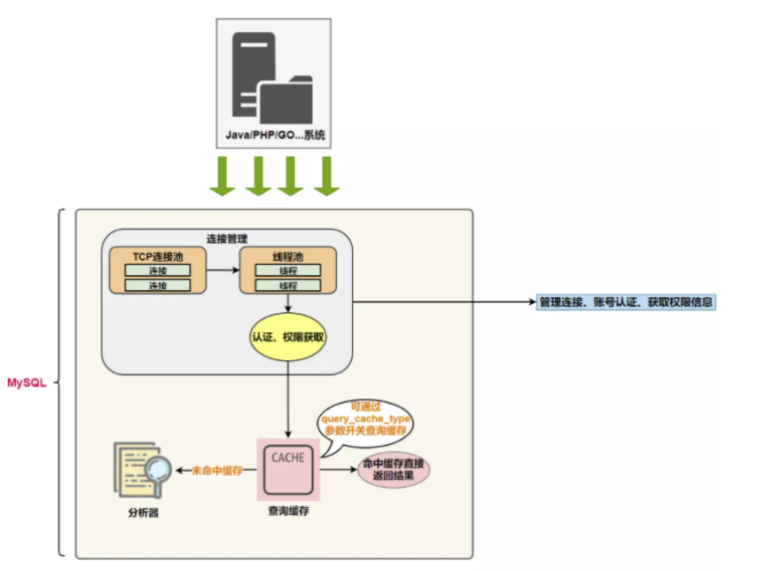

1. 逻辑架构剖析
1.1 服务器处理客户端请求
那服务器进程对客户端进程发送的请求做了什么处理，才能产生最后的处理结果呢？这里以查询请求为 例展示：
下面具体展开看一下：
1.2 第1层：连接层
系统（客户端）访问 MySQL 服务器前，做的第一件事就是建立 TCP 连接。 经过三次握手建立连接成功后， MySQL 服务器对 TCP 传输过来的账号密码做身份认证、权限获取。
- 用户名或密码不对，会收到一个Access denied for user错误，客户端程序结束执行
- 用户名密码认证通过，会从权限表查出账号拥有的权限与连接关联，之后的权限判断逻辑，都将依 赖于此时读到的权限
TCP 连接收到请求后，必须要分配给一个线程专门与这个客户端的交互。所以还会有个线程池，去走后 面的流程。每一个连接从线程池中获取线程，省去了创建和销毁线程的开销。
1.3 第2层：服务层
- SQL Interface: SQL接口
- 接收用户的SQL命令，并且返回用户需要查询的结果。比如SELECT … FROM就是调用SQL Interface
- MySQL支持DML（数据操作语言）、DDL（数据定义语言）、存储过程、视图、触发器、自定 义函数等多种SQL语言接口
- Parser: 解析器
- 在解析器中对 SQL 语句进行语法分析、语义分析。将SQL语句分解成数据结构，并将这个结构 传递到后续步骤，以后SQL语句的传递和处理就是基于这个结构的。如果在分解构成中遇到错误，那么就说明这个SQL语句是不合理的。
- 在SQL命令传递到解析器的时候会被解析器验证和解析，并为其创建 语法树 ，并根据数据字 典丰富查询语法树，会 验证该客户端是否具有执行该查询的权限 。创建好语法树后，MySQL还 会对SQl查询进行语法上的优化，进行查询重写。
Optimizer: 查询优化器
- SQL语句在语法解析之后、查询之前会使用查询优化器确定 SQL 语句的执行路径，生成一个
执行计划。 - 这个执行计划表明应该
使用哪些索引进行查询（全表检索还是使用索引检索），表之间的连接顺序如何，最后会按照执行计划中的步骤调用存储引擎提供的方法来真正的执行查询，并将 查询结果返回给用户。 - 它使用
“ 选取-投影-连接 ”策略进行查询。例如：
SELECT id,name FROM student WHERE gender = '女'; 这个SELECT查询先根据WHERE语句进行
选取，而不是将表全部查询出来以后再进行gender过 滤。 这个SELECT查询先根据id和name进行属性投影，而不是将属性全部取出以后再进行过滤，将这两个查询条件连接起来生成最终查询结果。- SQL语句在语法解析之后、查询之前会使用查询优化器确定 SQL 语句的执行路径，生成一个
- Caches & Buffers： 查询缓存组件
- MySQL内部维持着一些Cache和Buffer，比如Query Cache用来缓存一条SELECT语句的执行结果，如果能够在其中找到对应的查询结果，那么就不必再进行查询解析、优化和执行的整个过 程了，直接将结果反馈给客户端。
- 这个缓存机制是由一系列小缓存组成的。比如表缓存，记录缓存，key缓存，权限缓存等 。 这个查询缓存可以在 不同客户端之间共享 。
- 从MySQL 5.7.20开始，不推荐使用查询缓存，并在 MySQL 8.0中删除 。
小故事： 如果我问你9+8×16-3×2×17的值是多少，你可能会用计算器去算一下，最终结果35。如果再问你一遍9+8×16- 3×2×17的值是多少，你还用再傻呵呵的再算一遍吗？我们刚刚已经算过了，直接说答案就好了。
1.4 第3层：引擎层
插件式存储引擎层（ Storage Engines），真正的负责了MySQL中数据的存储和提取，对物理服务器级别 维护的底层数据执行操作，服务器通过API与存储引擎进行通信。不同的存储引擎具有的功能不同，这样 我们可以根据自己的实际需要进行选取。 MySQL 8.0.25默认支持的存储引擎如下：
1
2
3
4
5
6
7
8
9
10
11
12
13
14
15
mysql> show engines;
+--------------------+---------+----------------------------------------------------------------+--------------+------+------------+
| Engine | Support | Comment | Transactions | XA | Savepoints |
+--------------------+---------+----------------------------------------------------------------+--------------+------+------------+
| ARCHIVE | YES | Archive storage engine | NO | NO | NO |
| BLACKHOLE | YES | /dev/null storage engine (anything you write to it disappears) | NO | NO | NO |
| MRG_MYISAM | YES | Collection of identical MyISAM tables | NO | NO | NO |
| FEDERATED | NO | Federated MySQL storage engine | NULL | NULL | NULL |
| MyISAM | YES | MyISAM storage engine | NO | NO | NO |
| PERFORMANCE_SCHEMA | YES | Performance Schema | NO | NO | NO |
| InnoDB | DEFAULT | Supports transactions, row-level locking, and foreign keys | YES | YES | YES |
| MEMORY | YES | Hash based, stored in memory, useful for temporary tables | NO | NO | NO |
| CSV | YES | CSV storage engine | NO | NO | NO |
+--------------------+---------+----------------------------------------------------------------+--------------+------+------------+
9 rows in set (0.00 sec)
1.5 存储层
所有的数据，数据库、表的定义，表的每一行的内容，索引，都是存在 文件系统 上，以 文件 的方式存 在的，并完成与存储引擎的交互。当然有些存储引擎比如InnoDB，也支持不使用文件系统直接管理裸设 备，但现代文件系统的实现使得这样做没有必要了。在文件系统之下，可以使用本地磁盘，可以使用 DAS、NAS、SAN等各种存储系统。
1.6 小结
MySQL架构图本节开篇所示。下面为了熟悉SQL执行流程方便，我们可以简化如下：
简化为三层结构：
- 连接层：客户端和服务器端建立连接，客户端发送 SQL 至服务器端；
- SQL 层（服务层）：对 SQL 语句进行查询处理；与数据库文件的存储方式无关；
- 存储引擎层：与数据库文件打交道，负责数据的存储和读取。
2.SQL执行流程
2.1 MySQL 中的 SQL执行流程
MySQL的查询流程：
1.查询缓存：Server 如果在查询缓存中发现了这条 SQL 语句，就会直接将结果返回给客户端；如果没 有，就进入到解析器阶段。需要说明的是，因为查询缓存往往效率不高，所以在 MySQL8.0 之后就抛弃 了这个功能。
大多数情况查询缓存就是个鸡肋，为什么呢？
SELECT employee_id,last_name FROM employees WHERE employee_id = 101;
查询缓存是提前把查询结果缓存起来，这样下次不需要执行就可以直接拿到结果。需要说明的是，在 MySQL 中的查询缓存，不是缓存查询计划，而是查询对应的结果。这就意味着查询匹配的 鲁棒性大大降低 ，只有 相同的查询操作才会命中查询缓存 。两个查询请求在任何字符上的不同（例如：空格、注释、 大小写），都会导致缓存不会命中。因此 MySQL 的 查询缓存命中率不高 。 同时，如果查询请求中包含某些系统函数、用户自定义变量和函数、一些系统表，如 mysql 、 information_schema、 performance_schema 数据库中的表，那这个请求就不会被缓存。以某些系统函数 举例，可能同样的函数的两次调用会产生不一样的结果，比如函数 NOW ，每次调用都会产生最新的当前 时间，如果在一个查询请求中调用了这个函数，那即使查询请求的文本信息都一样，那不同时间的两次 查询也应该得到不同的结果，如果在第一次查询时就缓存了，那第二次查询的时候直接使用第一次查询 的结果就是错误的！
此外，既然是缓存，那就有它 缓存失效的时候 。MySQL的缓存系统会监测涉及到的每张表，只要该表的 结构或者数据被修改，如对该表使用了 INSERT 、 UPDATE 、 DELETE 、 TRUNCATE TABLE 、 ALTER TABLE 、 DROP TABLE 或 DROP DATABASE 语句，那使用该表的所有高速缓存查询都将变为无效并从高 速缓存中删除！对于 更新压力大的数据库 来说，查询缓存的命中率会非常低。
2.解析器：在解析器中对 SQL 语句进行语法分析、语义分析。

分析器先做词法分析 。你输入的是由多个字符串和空格组成的一条 SQL 语句，MySQL 需要识别出里面 的字符串分别是什么，代表什么。 MySQL 从你输入的”select”这个关键字识别出来，这是一个查询语 句。它也要把字符串“T”识别成“表名 T”，把字符串“ID”识别成“列 ID”。
接着，要做语法分析 。根据词法分析的结果，语法分析器（比如：Bison）会根据语法规则，判断你输 入的这个 SQL 语句是否 满足 MySQL 语法 。
select department_id,job_id,avg(salary) from employees group by department_id;
如果SQL语句正确，则会生成一个这样的语法树：
3.优化器：在优化器中会确定 SQL 语句的执行路径，比如是根据 全表检索 ，还是根据 索引检索 等。
举例：如下语句是执行两个表的 join：
select * from test1 join test2 using(ID)
where test1.name='zhangwei' and test2.name='mysql高级课程';
1
2
3
4
5
6
7
8
9
方案1：可以先从表 test1 里面取出 name='zhangwei'的记录的 ID 值，再根据 ID 值关联到表 test2，再判
断 test2 里面 name的值是否等于 'mysql高级课程'。
方案2：可以先从表 test2 里面取出 name='mysql高级课程' 的记录的 ID 值，再根据 ID 值关联到 test1，
再判断 test1 里面 name的值是否等于 zhangwei。
这两种执行方法的逻辑结果是一样的，但是执行的效率会有不同，而优化器的作用就是决定选择使用哪一个方案。优化器阶段完成后，这个语句的执行方案就确定下来了，然后进入执行器阶段。
如果你还有一些疑问，比如优化器是怎么选择索引的，有没有可能选择错等。后面讲到索引我们再谈。
在查询优化器中，可以分为 逻辑查询 优化阶段和 物理查询 优化阶段。
4.执行器
截止到现在，还没有真正去读写真实的表，仅仅只是产出了一个执行计划。于是就进入了 执行器阶段 。
在执行之前需要判断该用户是否 具备权限 。如果没有，就会返回权限错误。如果具备权限，就执行 SQL 查询并返回结果。在 MySQL8.0 以下的版本，如果设置了查询缓存，这时会将查询结果进行缓存。
select * from test where id=1;
比如：表 test 中，ID 字段没有索引，那么执行器的执行流程是这样的：
1
2
3
4
调用 InnoDB 引擎接口取这个表的第一行，判断 ID 值是不是1，如果不是则跳过，如果是则将这行存在结果集中；
调用引擎接口取“下一行”，重复相同的判断逻辑，直到取到这个表的最后一行。
执行器将上述遍历过程中所有满足条件的行组成的记录集作为结果集返回给客户端。
至此，这个语句就执行完成了。对于有索引的表，执行的逻辑也差不多。
SQL 语句在 MySQL 中的流程是： SQL语句→查询缓存→解析器→优化器→执行器 。
2.2 MySQL8中SQL执行原理
1. 确认profiling 是否开启
1
2
3
4
5
6
7
mysql> select @@profiling;
+-------------+
| @@profiling |
+-------------+
| 0 |
+-------------+
1 row in set, 1 warning (0.00 sec)
profiling=0 代表关闭，我们需要把 profiling 打开，即设置为 1：
1
mysql> set profiling=1;
2. 多次执行相同SQL查询
然后我们执行一个 SQL 查询（你可以执行任何一个 SQL 查询）：
1
mysql> select * from employees;
3. 查看profiles
查看当前会话所产生的所有 profiles：
1
2
3
4
5
6
7
8
9
mysql> show profiles; # 显示最近的几次查询
mysql> show profiles;
+----------+------------+----------------------------+
| Query_ID | Duration | Query |
+----------+------------+----------------------------+
| 1 | 0.00028425 | select host,user from user |
| 2 | 0.00021700 | select host from user |
+----------+------------+----------------------------+
2 rows in set, 1 warning (0.00 sec)
4. 查看profile
显示执行计划，查看程序的执行步骤：
1
2
3
4
5
6
7
8
9
10
11
12
13
14
15
16
17
18
19
20
21
22
23
mysql> show profile;
+--------------------------------+----------+
| Status | Duration |
+--------------------------------+----------+
| starting | 0.000073 |
| Executing hook on transaction | 0.000007 |
| starting | 0.000006 |
| checking permissions | 0.000004 | # 权限检查
| Opening tables | 0.000025 | # 打开表
| init | 0.000005 | # 初始化
| System lock | 0.000006 | # 锁系统
| optimizing | 0.000003 | # 优化查询
| statistics | 0.000011 |
| preparing | 0.000011 | # 准备
| executing | 0.000031 | # 执行
| end | 0.000003 |
| query end | 0.000002 |
| waiting for handler commit | 0.000006 |
| closing tables | 0.000005 |
| freeing items | 0.000011 |
| cleaning up | 0.000007 |
+--------------------------------+----------+
17 rows in set, 1 warning (0.00 sec)
当然你也可以查询指定的 Query ID，比如：
1
2
3
4
5
6
7
8
9
10
11
12
13
14
15
16
17
18
19
20
21
22
23
mysql> show profile for query 1;
+--------------------------------+----------+
| Status | Duration |
+--------------------------------+----------+
| starting | 0.000059 |
| Executing hook on transaction | 0.000004 |
| starting | 0.000006 |
| checking permissions | 0.000005 |
| Opening tables | 0.000025 |
| init | 0.000004 |
| System lock | 0.000006 |
| optimizing | 0.000004 |
| statistics | 0.000011 |
| preparing | 0.000012 |
| executing | 0.000033 |
| end | 0.000003 |
| query end | 0.000003 |
| waiting for handler commit | 0.000006 |
| closing tables | 0.000006 |
| freeing items | 0.000090 |
| cleaning up | 0.000008 |
+--------------------------------+----------+
17 rows in set, 1 warning (0.00 sec)
此外，还可以查询更丰富的内容：
1
2
3
4
5
6
7
8
9
10
11
12
13
14
15
16
17
18
19
20
21
22
23
mysql> show profile cpu,block io for query 2;
+--------------------------------+----------+----------+------------+--------------+---------------+
| Status | Duration | CPU_user | CPU_system | Block_ops_in | Block_ops_out |
+--------------------------------+----------+----------+------------+--------------+---------------+
| starting | 0.000073 | 0.000011 | 0.000062 | 0 | 0 |
| Executing hook on transaction | 0.000007 | 0.000001 | 0.000006 | 0 | 0 |
| starting | 0.000006 | 0.000000 | 0.000005 | 0 | 0 |
| checking permissions | 0.000004 | 0.000001 | 0.000004 | 0 | 0 |
| Opening tables | 0.000025 | 0.000004 | 0.000021 | 0 | 0 |
| init | 0.000005 | 0.000000 | 0.000004 | 0 | 0 |
| System lock | 0.000006 | 0.000001 | 0.000006 | 0 | 0 |
| optimizing | 0.000003 | 0.000001 | 0.000002 | 0 | 0 |
| statistics | 0.000011 | 0.000001 | 0.000010 | 0 | 0 |
| preparing | 0.000011 | 0.000002 | 0.000009 | 0 | 0 |
| executing | 0.000031 | 0.000004 | 0.000027 | 0 | 0 |
| end | 0.000003 | 0.000001 | 0.000002 | 0 | 0 |
| query end | 0.000002 | 0.000000 | 0.000002 | 0 | 0 |
| waiting for handler commit | 0.000006 | 0.000001 | 0.000005 | 0 | 0 |
| closing tables | 0.000005 | 0.000001 | 0.000005 | 0 | 0 |
| freeing items | 0.000011 | 0.000001 | 0.000010 | 0 | 0 |
| cleaning up | 0.000007 | 0.000001 | 0.000005 | 0 | 0 |
+--------------------------------+----------+----------+------------+--------------+---------------+
17 rows in set, 1 warning (0.00 sec)
2.3 MySQL5.7中SQL执行原理
由于后续使用Mysql 8.0版本，此处就不记录了
2.4 SQL语法顺序
随着Mysql版本的更新换代，其优化器也在不断的升级，优化器会分析不同执行顺序产生的性能消耗不同 而动态调整执行顺序。
需求：查询每个部门年龄高于20岁的人数且高于20岁人数不能少于2人，显示人数最多的第一名部门信息
下面是经常出现的查询顺序：
3. 数据库缓冲池(buffer pool)
InnoDB 存储引擎是以页为单位来管理存储空间的，我们进行的增删改查操作其实本质上都是在访问页面（包括读页面、写页面、创建新页面等操作）。而磁盘 I/O 需要消耗的时间很多，而在内存中进行操作，效率则会高很多，为了能让数据表或者索引中的数据随时被我们所用，DBMS 会申请 占用内存来作为 数据缓冲池 ，在真正访问页面之前，需要把在磁盘上的页缓存到内存中的 Buffer Pool 之后才可以访 问。
这样做的好处是可以让磁盘活动最小化，从而 减少与磁盘直接进行 I/O 的时间 。要知道，这种策略对提 升 SQL 语句的查询性能来说至关重要。如果索引的数据在缓冲池里，那么访问的成本就会降低很多。
3.1 缓冲池 vs 查询缓存
缓冲池和查询缓存是一个东西吗？不是。
1.缓冲池（Buffer Pool）
首先我们需要了解在 InnoDB 存储引擎中，缓冲池都包括了哪些。
在 InnoDB 存储引擎中有一部分数据会放到内存中，缓冲池则占了这部分内存的大部分，它用来存储各种 数据的缓存，如下图所示：
从图中，你能看到 InnoDB 缓冲池包括了数据页、索引页、插入缓冲、锁信息、自适应 Hash 和数据字典 信息等。
缓存池的重要性：
缓存原则： 位置 * 频次 这个原则，可以帮我们对 I/O 访问效率进行优化。
首先，位置决定效率，提供缓冲池就是为了在内存中可以直接访问数据。
其次，频次决定优先级顺序。因为缓冲池的大小是有限的，比如磁盘有 200G，但是内存只有 16G，缓冲 池大小只有 1G，就无法将所有数据都加载到缓冲池里，这时就涉及到优先级顺序，会 优先对使用频次高 的热数据进行加载 。
2.查询缓存
那么什么是查询缓存呢？
查询缓存是提前把 查询结果缓存 起来，这样下次不需要执行就可以直接拿到结果。需要说明的是，在 MySQL 中的查询缓存，不是缓存查询计划，而是查询对应的结果。因为命中条件苛刻，而且只要数据表 发生变化，查询缓存就会失效，因此命中率低。
3.2 缓冲池如何读取数据
缓冲池管理器会尽量将经常使用的数据保存起来，在数据库进行页面读操作的时候，首先会判断该页面 是否在缓冲池中，如果存在就直接读取，如果不存在，就会通过内存或磁盘将页面存放到缓冲池中再进 行读取。
缓存在数据库中的结构和作用如下图所示：
3.3 查看/设置缓冲池的大小
如果你使用的是 InnoDB 存储引擎，可以通过查看 innodb_buffer_pool_size 变量来查看缓冲池的大 小。命令如下：
mysql> show variables like 'innodb_buffer_pool_size';
+-------------------------+-----------+
| Variable_name | Value |
+-------------------------+-----------+
| innodb_buffer_pool_size | 134217728 |
+-------------------------+-----------+
1 row in set (0.01 sec)
你能看到此时 InnoDB 的缓冲池大小只有 134217728/1024/1024=128MB。我们可以修改缓冲池大小，比如 改为256MB，方法如下：
1
mysql> set global innodb_buffer_pool_size = 268435456;
或者
[server]
innodb_buffer_pool_size = 268435456
然后再来看下修改后的缓冲池大小，此时已成功修改成了 256 MB：
3.4 多个Buffer Pool实例
[server]
innodb_buffer_pool_instances = 2
这样就表明我们要创建2个 Buffer Pool 实例。
我们看下如何查看缓冲池的个数，使用命令：
mysql> show variables like 'innodb_buffer_pool_instances';
+------------------------------+-------+
| Variable_name | Value |
+------------------------------+-------+
| innodb_buffer_pool_instances | 1 |
+------------------------------+-------+
1 row in set (0.00 sec)
那每个 Buffer Pool 实例实际占多少内存空间呢？其实使用这个公式算出来的：
1
innodb_buffer_pool_size/innodb_buffer_pool_instances
也就是总共的大小除以实例的个数，结果就是每个Buffer Pool 实例占用的大小。
3.5 引申问题
Buffer Pool是MySQL内存结构中十分核心的一个组成，你可以先把它想象成一个黑盒子。
黑盒下的更新数据流程
我更新到一半突然发生错误了，想要回滚到更新之前的版本，该怎么办？连数据持久化的保证、事务回滚都做不到还谈什么崩溃恢复？
答案：Redo Log & Undo Log